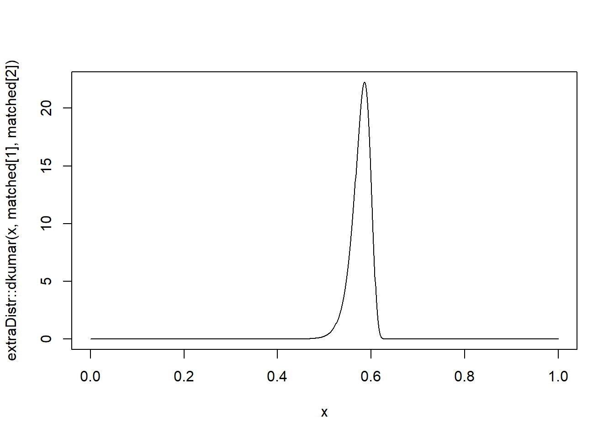

Matching quantiles to the Kumaraswamy distribution
effective altruism
forecasting
statistics
Author
Jonas Moss
Published
Feb 24, 2022
Introduction
Sometimes, in particular when doing informal forecasting, you would like to match quantiles to distributions. For real data, the most common choice is the normal distribution. For positive data with “multiplicative qualities”, so to speak, the most common choice is the log-normal, but the truncated normal can also be reasonable. But what should you do when dealing with data on the \([0,1]\)?
Distributions of (transformed) location-scale families are easy to match quantiles to, involving only algebraic manipulations with the cumulative distribution function. And there are infinitely many transformed location-scale families living on \([0,1]\): For any location-scale family distribution \(X\), such as the normal, and cumulative distribution function \(G\) (on \(\mathbb{R}\)), you can define the transformed family \(G(\mu + \sigma X)\), living on \([0,1]\). Then you can then match quantiles to the original family by mapping \(x\to G^{-1}(x)\) and \(y\to G^{-1}(y)\). The most natural candidate here is, perhaps, the logit-normal. These distributions sometimes have poor looks, see e.g., the plot in the linked article, but could be an excellent choice.
Aside from transformed location-scale families, the most obvious way would be to match quantiles using the beta distribution. But the beta distribution has a troublesome cumulative distribution function that is not available in every programming language. Moreover, for the beta distribution, matching quantiles is not a simple algebraic manipulation. Instead, you need to do numerical optimization. This increases the complexity of the procedure, both in terms of resources consumed and reliability, as it is hard to make sure the numerical optimization works all the time.
In this post I describe how to efficiently match quantiles for the Kumaraswamy distribution. The Kumaraswamy distribution is visually indistinguishable from the Beta distribution, but is sometimes easier to work with mathematically. In particular, the cumulative distribution function of a Kumaraswamy distribution with parameters \(a,b\) is \(F(x;a,b) = 1-(1-x^a)^b\). Compare this to the Beta distribution, whose cumulative distribution function is the incomplete regularized beta function - the difference in complexity is striking. The Kumaraswamy distribution has some downsides though, most notably that the rôles of \(a\) and \(b\) aren’t symmetric. In other words, so you can’t be sure that the Kumaraswamy with equal \(a\) and \(b\) parameters is symmetric. Moreover, it’s not a conjugate distribution for the binomial, and the expectations doesn’t have as simple closed form as the beta distribution.
But if your goal is to match quantiles to a general purpose and reasonable-looking distribution, then look no further!
Doing the matching
We’ll do the matching using Newton–Raphson, but first we’ll cover the following steps:
Reduce the number of equations. By finding an expression for \(b\) in terms of \(a\), we can reduce the problem from a two-dimensional Newton–Raphson to a one-dimensional Newton–Raphson.
Do a rough analysis of the objective function. A rough analysis of the objective function suggests a very natural starting value.
Do Taylor expansions to prevent numerical instability. The objective function and its derivative are sometimes poorly behaved. We use Taylor expansions to prevent numerical instability.
The resulting is a function matchkumar(x,y,alpha,beta) that is both fast and reasonably reliable.
1. Reduce the number of equations
The cumulative distribution function is \(F(x)=1-(1-x^{a})^{b}\). Suppose we want to match the quantiles \(\alpha\) and \(\beta\) to \(x\) and \(y\). That’s equivalent to \[\begin{eqnarray*}
F(x_{0}) & = & \alpha=1-(1-x^{a})^{b},\\
F(x_{1}) & = & \beta=1-(1-y^{a})^{b}.
\end{eqnarray*}\] Now we need to solve for \(a,b\). To do this, we’ll first solve for \(b\), yielding \[\begin{eqnarray*}
1-\alpha & = & (1-x^{a})^{b},\\
\log(1-\alpha) & = & b\log(1-x^{a}).
\end{eqnarray*}\] Writing \(b\) as a function of \(a\), we find \[
b(a)=\frac{\log(1-\alpha)}{\log(1-x^{a})}.
\] Now solve for \(a\) and find \[
a(b)=\frac{\log\left(1-(1-\beta)^{1/b}\right)}{\log(y)}.
\] Plug in the definition of \(b(a)\) into the definition of \(a(b)\) to find \[
a=\frac{\log\left(1-(1-\beta)^{\frac{\log(1-x^{a})}{\log(1-\alpha)}}\right)}{\log(y)}
\] Our goal is to solve this equation for \(a\), then plug the result into \(b(a)\) to find \(b\). But we can’t solve for \(b\) analytically.
To do this, let’s define \[
\delta=(1-\beta)^{1/\log(1-\alpha)},\quad g(a)=\delta^{\log(1-x^{a})},
\] and we need to solve \[
f(a)=a\log y-\log(1-g(a))=0.
\] The derivative of this one is \[
f'(a)=\log y-\log(x)\log\delta\frac{x^{a}g(a)}{(1-x^{a})(1-g(a))}.
\]
2. Function analysis
The function \(f(a)\) has an oblique asymptote as \(a\to\infty\). Using Taylor expansions, one may verify that its slope is \(\log(y/x)\) and its intercept \(-\log\log\delta.\) In other words, \(\lim_{a\to\infty}f(a)-h(a)=0\), where \(h(a)=-\log\log\delta+\log(y/x)a\). From what I can see, \(h(a)\) approximates \(f(a)\) from below. This is handy, as it is guaranteed that \(f(a_{0})>0\), where \(a_{0}=\log\log\delta/\log(y/x)\) is the solution to \(h(a)=0\). This will typically provide an excellent starting point.
3. Taylor approximations
The function \(g(a)\) is behaves poorly numerically when \(x^a\) becomes small, as it gets to close to \(1\) and promotes numerical instability. To fix this, we use Taylor approximations for \(f\) and \(f'\) when \(x^a\) is sufficiently small.
The first-order Taylor expansion of \(\log(1-\delta^{\log(1-x^a)})\) (around \(x^a=0\)), used in \(f(a)\), is \[
a\log x+\log\log\delta+\frac{1}{2}x^{a}(1-\log\delta)+O(x^{a})
\]
The first-order Taylor expansion of \(f'(x^a)\) as a function of \(x^a\) is \[\log y - \log x \cdot \frac{1}{2}(1+\log\delta)x^a+O(x^{2a})\] We will use these approximations when \(x^a<4\cdot10^{-6}\).
In addition, we will employ several other tricks to ensure numerical stability.
Code for matchkumar
Below is R code for matchkumar. The function does not use any R-specific functionality, so it should be easily portable to any language of your choosing, such as JavaScript, Rust, or Crystal. The vectorization used in the functions f and f_deriv below is not strictly necessary, as they are only called using scalar arguments.
Code for matchkumar
#' Match quantiles for the Kumaraswamy distributon.#'#' @param alpha,beta Upper and lower quantiles to match.#' @param x,y Values at those quantiles.#' @param eps,iter_lim Used in the Newton-Raphson algorithm.#' @param bound When x^a is smaller than this bound, use first-order#' Taylor approximation.#' @return The a and b parameters for the Kumaraswamy distribution so that#' extraDistr::qkumar(alpha, a, b) = x and#' extraDistr::qkumar(beta, a, b) = ymatchkumar <- \(alpha, beta, x, y, eps =1e-04, iter_lim =100, bound =4e-6) { log_y <-log(y) log_x <-log(x) g <- \(x_a) (1- beta)^(log(1- x_a) /log(1- alpha)) log_delta <-log(1- beta) /log(1- alpha) f <- \(a) { f_taylor <- \(a) { log_y * a - (a *log(x) +log(log_delta) +0.5* x^a * (1- log_delta)) } f_not_taylor <- \(a) { log_y * a -log(1-g(x^a)) } vec <- (x^a < bound) out <-rep(0, length(a)) out[vec] <-f_taylor(a[vec]) out[!vec] <-f_not_taylor(a[!vec]) out } f_deriv <- \(a) { f_deriv_not_taylor <- \(a) { x_a <- x^a delta_xa <-g(x_a) log_y - log_x * log_delta * x_a * delta_xa / ((1- x_a) * (1- delta_xa)) } f_deriv_taylor <- \(a) { x_a <- x^a-log_x + log_y +0.5* (log_delta -1) * log_x * x_a } vec <- (x^a < bound) out <-rep(0, length(a)) out[vec] <-f_deriv_taylor(a[vec]) out[!vec] <-f_deriv_not_taylor(a[!vec]) out } minimum <- .Machine$double.eps a_to_b <- \(a) { x_a <- x^a attempt <-log(1- alpha) /log(1- x_a) result <-if (is.infinite(attempt)) {log(1- alpha) * (-1/ x_a +1/2+ x_a /12+ x_a^2/24) } else { attempt }max(result, minimum) } a0 <-log(log_delta) /log(y / x)for (i inseq(iter_lim)) { a1_ <- a0 -f(a0) /f_deriv(a0) a1 <-if (is.na(a1_)) minimum elsemax(a1_, minimum) rel_error <- (a0 - a1) / a1if (abs(rel_error) < eps | a0 == minimum) break a0 <- a1 } result <-c(a = a0, b =a_to_b(a0))attr(result, "iter") <- i result}
Example
Let’s see how the function performs on an example:
We typically do not need a large number of iterations; in this case it’s just 1!
attr(matched, "iter")
[1] 1
Here’s a plot of the resulting density.

Performance
The example above is not sufficient to prove the method works. To verify a solution works, let’s check the squared distance between the implied quantiles and the desired quantiles.
The function works very well for most randomly generated values, but not for absolutely all of them. Sadly, I don’t think it’s possible to solve this problem without using arbitrary precision numbers. For the problem lies not in the calculation of \(a\) itself, which works very well, but in the calculation of \(b\). For some values of \(a\) we are not able to calculate the value of \(b\) sufficiently precisely using floating point arithmetic. Moreover, extraDistr::qkumar is not able to handle these extreme inputs. I strongly doubt this is would be a problem in practice, as the random values exhibiting these problems are quite unrealistic, and can be avoided altogether by scaling the Kumaraswamy distribution.
Consider the following.
x =0.6503457y =0.6656772alpha =0.2139453beta =0.894129
Here \(x\) and \(y\) are very close, but \(\alpha\) and \(\beta\) far apart, which forces a large amount of mass in a very small space. In these cases \(a\) appears to be calculated to great accuracy.
matched =matchkumar(alpha, beta, x, y)matched
a b
9.583478e+01 1.944493e+17
attr(,"iter")
[1] 1
But the exceedingly large \(a,b\)s cannot be handled by the extraDistr::qkumar.
Another sort of trouble-maker occurs when \(a\) is too close to \(0\), i.e., closer than the machine epsilon.
x =0.1383447y =0.794063alpha =0.9214318beta =0.9266641
It’s not a surprise that these values are hard to fit, as the \(x,y\) values are far apart but \(\alpha\) and \(\beta\) very, very, close. In this case, matchkumar yields
matched =matchkumar(alpha,beta,x,y)matched
a b
2.220446e-16 7.195903e-02
attr(,"iter")
[1] 11
But the matched quantiles are not as close as we would like.
But as the Kumaraswamy distribution is parameterized, we can’t get the \(a\) much closer to 0 than this.
Number of iterations
Most of the time, the number of iterations (capped at \(100\)) is small. However, the cap is sometimes reached. In most cases, this is not cause for alarm. This is because we evaluate the solutions using the distance from the desired quantiles, but they are evaluated using the relative error in the Newton–Raphson loop. And the first will often be small even if the second is “large”. Moreover, the large numbers of iterations happens when \(a\) is very, very small, which is unlikely to happen in applications.